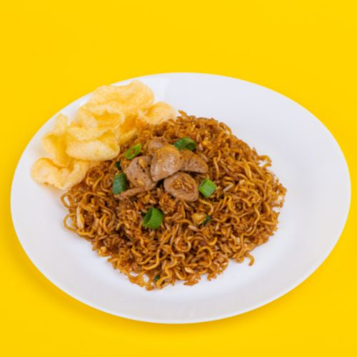
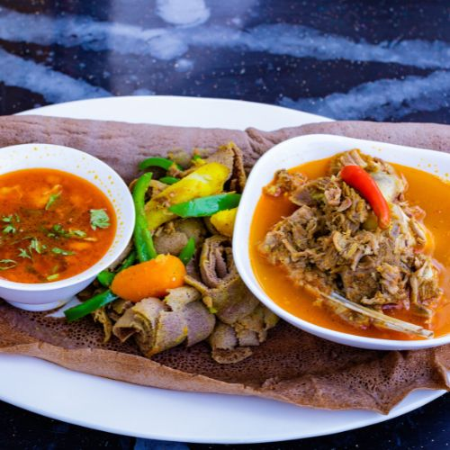
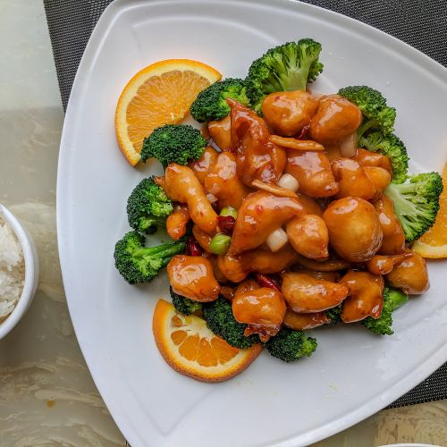
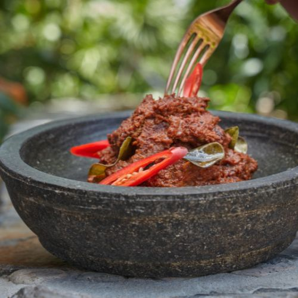
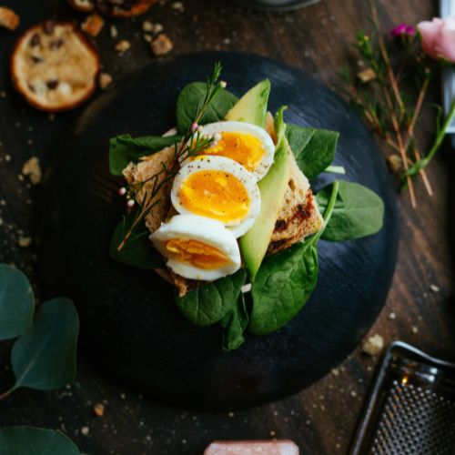

Daging merah seperti sapi, kerbau, maupun kambing biasanya jadi bahan favorit untuk diolah saat ada momen spesial seperti hari raya dan acara kumpul keluarga. Mengingat daging merah umumnya butuh waktu lama untuk jadi empuk saat dimasak, isi tabung gas Ibu pun bias cepat habis. Nah, Maggi punya cara memasak daging sapi agar empuk dan Ibu tetap bisa hemat gas. Tips ini juga bisa diterapkan untuk jenis daging merah lainnya, lho. Yuk, simak caranya!
Baca selengkapnya ➜Selalu Ikuti Kami!






